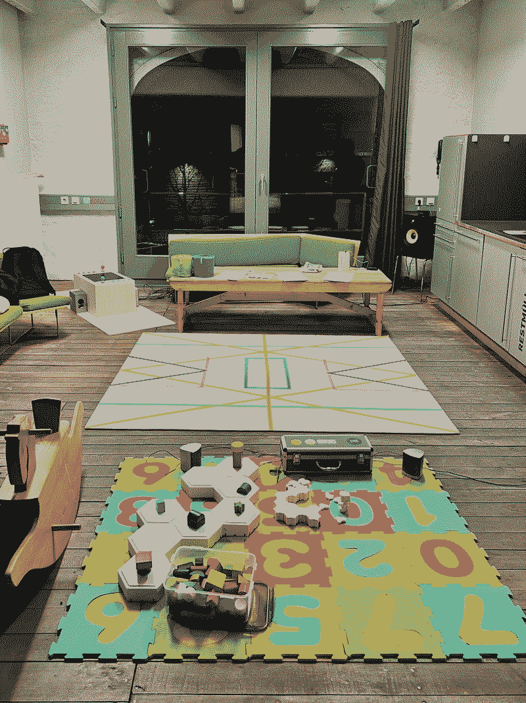

Spielplatz
Spielplatz is an interactive playground developed within the HST2026 program at HfK Bremen, designed for children to experience new rules and creativity through play and music.
Multiple Works(Klangspiel, Wie man den Fluss Überquert, Apfel, Wave, River), Children's books, toys, paper tape on the mat
<HST2026, HfK Bremen>, Bremen(Germany), 2026

"Spielplatz" is an interactive installation designed to bridge the
gap between art and play through a multi-sensory experience.
At 'Spielplatz,' children can actively engage with a variety of
interactive works, including
Wave, River,
Apple, the fairytale book
'Wie man den Fluss überquert', and the
sound-focused game console
Klangspiel.
By intentionally blending these artworks with a central play mat and
a curated collection of everyday toys and books, the project seeks
to dismantle the traditional authority of art. This curated
"playground" lowers the barrier for children, inviting them to
become active creators who can draw, compose, and play without
feeling the distance typically found in a gallery setting.